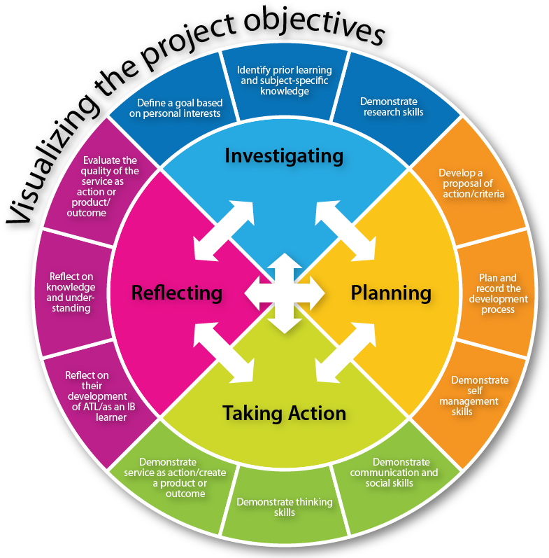

Afficher les Compétences/CV
Afficher le projet d'entreprise

Afficher les Projets réalisés au cours de la seconde année de formation
Afficher les Projets réalisés au cours de la seconde année de formation
Compétences| CV
Au cours de mon cursus, j'ai eu l'occasion de découvrir la fondation du développement WEB (HTML/CSS/JS). Avec cela j'ai essentiellement travaillé en Php et en Dart et son Framwork FLutter
Projet D'entreprise
Durant ma deuxième année en alternance chez Popsicube, je me suis occupé, de la création au déploiement, d'une application Sous symfony ayant pour but de tracer les applications des clients géré par l'entreprise, mais aussi des informations des serveurs acquis.
Projets Réalisés
Au cours de mon cursus, j'ai eu l'occasion de découvrir la fondation du développement WEB (HTML/CSS/JS). Avec cela j'ai essentiellement travaillé en Php et en Dart et son Framwork FLutter